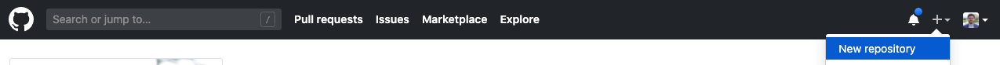
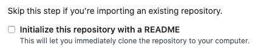

Hosting Your Project in GitHub
This section explains how to store your project files in a remote repository.
Creating a GitHub Repository
Follow the next steps to create a GitHub repository to host your documentation files.
- Go to GitHub and login or create a new account if you don't have one.
- Create a new repository. 
- Add a name and a description to your repository.
NOTE: Don't initialize the reposotory with a README. Make sure the option is unchecked before you create the repository.
 - Click Create repository.
- Copy the
HTTPSaddress –orSSHif you have SSH keys configured.
Pushing Your Documents to the Remote GitHub Repository
Follow the next steps to push your documents to the remote repository:
- Navigate to your project directory from a Terminal window.
- Run the following command to initialize your Git repository:
git init - Add your documentation files to the repository with this command:
git add . - Commit your changes:
git commit -m "first commit" - Add your local repository to the remote GitHub repository with this command:
git remote add origin <HTTPS OR SSH ADDRESS CORRESPONDING TO YOUR REPOSITORY> - Push your documents to GitHub:
git push -u origin master